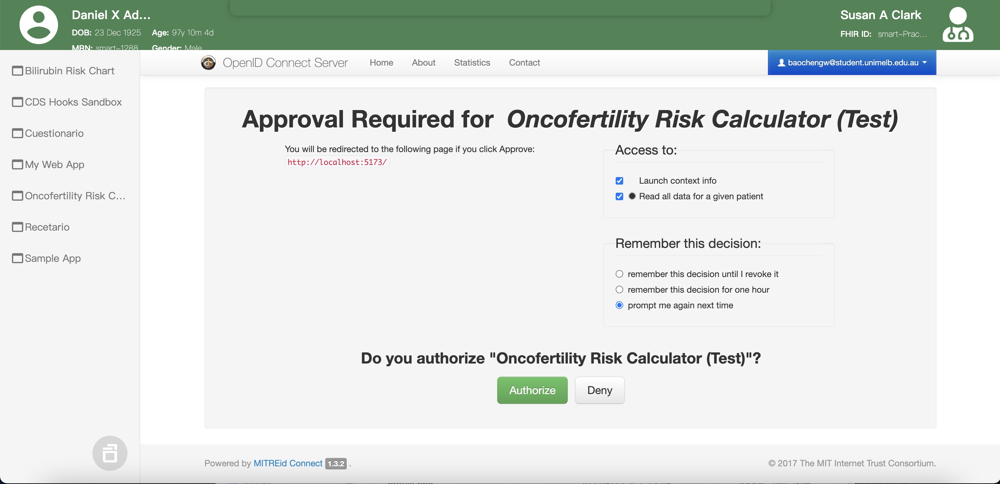
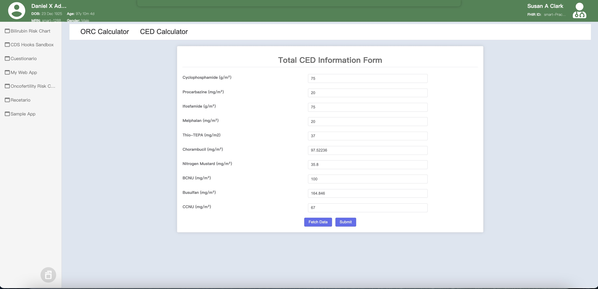
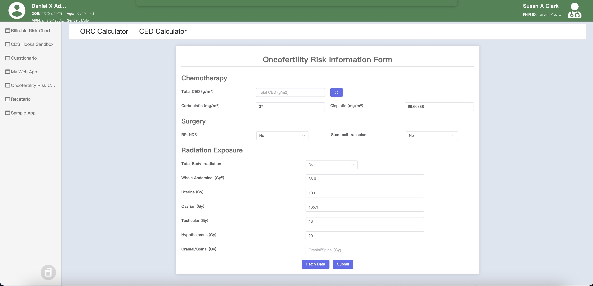
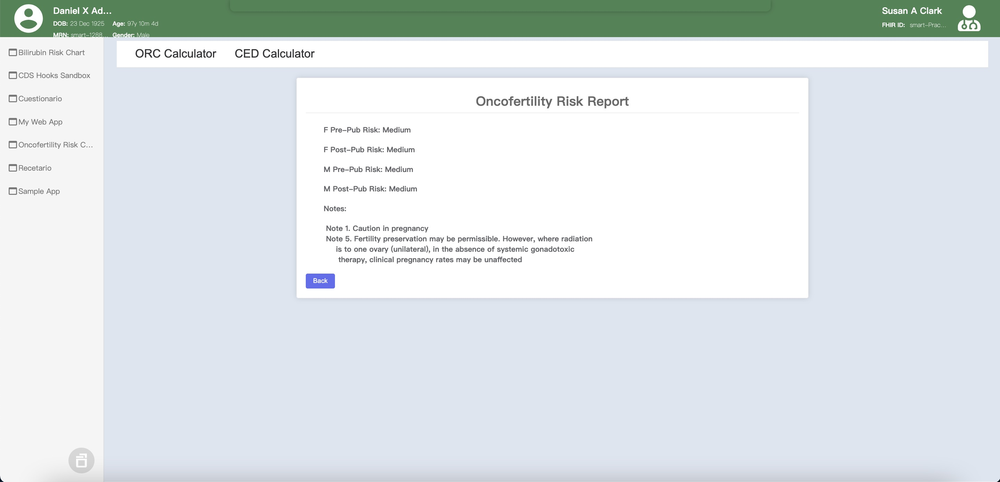

SMART ORC: A SMART-on-FHIR Oncofertility Risk Calculator App
SMART ORC, which is an oncofertility calculator app based on SMART on FHIR standards and specifications. It is designed for the "Developing a SMART on FHIR app" course as a demo app. Functionally, the SMART ORC offers the clinicians to calculate the risk of infertility based on the drugs and dosages of the treatments, and also provides an interface to calculate Total CED (Cyclophosphamide Equivalent Dose).
Project Introduction
A national training program for FHIR (Fast Healthcare Interoperability Resources) is funded by ADHA and in collaboration with CSIRO, HL7 Australia, and the Centre for Digital Transformation of Health at UniMelb. There are over 700 EOIs for these training courses from architects, developers, managers, and clinicians in Health Tech Companies (e.g., Microsoft, Telstra Health), jurisdictions (e.g., NSW), the federal government (e.g., ADHA), and health organisations (e.g, Monash Health, Queensland Health). This project will concentrate idea on the course "Developing a SMART on FHIR app."
This project's main objective is to develop a mock clinical decision support application SMART ORC, which is an oncofertility calculator app based on SMART on FHIR standards and specifications. It is designed for the "Developing a SMART on FHIR app" course as a demo app. Functionally, the SMART ORC offers the clinicians to calculate the risk of infertility based on the drugs and dosages of the treatments, and also provides an interface to calculate Total CED (Cyclophosphamide Equivalent Dose). For the course and program, it aims to serve as a comprehensive guide for course participants, offering step-by-step references throughout their development journey. Beyond educational purposes, the demo app could be served as a valuable presentation tool for both companies and government groups, highlighting the real-world benefits of SMART on FHIR applications.
Project Demo Video
Key Techonlogies
- Vue.js
- JavaScript
- SMART-on-FHIR
- MELD EHR Sandbox
Architecture Design
The system can be divided into 3 main components, including the SMART-on-FHIR Application, the Authorization Server, and the Resource Server. Unlike the MVC(Model-View-Controller) Pattern, this project is an application written in Vue.js (HTML, CSS, JavaScript) using a OAuth Server and a FHIR server as the application backend.
All the paitent data and the clinician data will be preserved in the Resource Server. In the scope of this project, we will be provided with a certain FHIR Resources Server. To manipulate the data for computation, the SMART-on-FHIR Application will send a HTTP request to this Resource Server via a set of RESTful APIs, and the Resource Server will return the requested data back if they can authenticate the clinician and patient.
The authentication and authoristation of the Patient and Clinician will rely on the Authorization Server provided by the OpenID. To do so, the SMART-on-FHIR application will first send request to the Authorization Server via OAuth2 protocol APIs. If the Authorization Server could validate the identity, it will return a set of SMART-on-FHIR Context back to the Application, which includes information about the currently selected patient, clinical encounter, styling information, etc.
Key Features
SMART-on-FHIR OAuth Consent
Because the final project was expected to have access to a variety of real-world patient data, most stakeholders had ethical concerns regarding the patient’s privacy and security. To resolve this issue, I first decided to adopt an engineering strategy of regular ethics evaluation within the team to ensure that the team could stick to the latest ethical standards and values, thereby ensuring that the project would always remain ethically acceptable against the changing environment and requirements.
During the evaluation, we agreed that privacy had the highest ethical impact, and the patient data should be protected even though the clinicians were the only users of the app by design. Although some of us argued that doctors using their own patient data for treatment had its legitimacy, from a legal perspective, obtaining patient consent before using their data is the most basic ethical obligation.
Thus, I developed the Authentication function based on OAuth2 protocol in this application, which would be automatically triggered once the clinician attempted to fetch a patient’s medical records from the databases. The clinician would be directed to the Authentication page of the data source, and the clinician would not be allowed to access the patient’s data, unless the patient authorizes the clinician’s request by logging into the databases with his or her own medical account, and clicks the “Authorize” button on the Authorization page. The authentication page was shown below.
This Authentication mechanism would not be time consuming or complicated in the scenario where the clinician and patient are meeting face-to-face in the clinics or hospitals, and it could ensure that the clinician can only access the data under the supervision of the patients.
Cyclophosphamide Equivalent Dose Calculator
We developed an additional interface to calculate the Total CED (Cyclophosphamide Equivalent Dose) from a list of chemotherapy agents. The clinician should be able to enter the dosage for each of the agent. The app will calculate the CED for each from the dosage (logic for calculation of CED is provided by our client Mady Mani) and the total CED will be the sum of all.
With the implementation of SMART-on-FHIR protocol, we has enabled the auto data fetching feature that allows the clinicians to fetch patients' historical dosage data from their medical records preserved in some EHR systems, by simply clicking the "Fetch" button.
Oncofertility Risk Calculator
We developed a formal interface to calculate the Oncofertility Risk based on the Total CED value and other dosage data. Similar to the CED calculator, the auto EHR data fetching via SMART-on-FHIR protocol has been enabled, and clinicians are also able to fill in and change the data by themselves.
After all the information is filled out, the oncofertility risk report will be generated after the clinician clicks the "Submit" Button.
Accknowledgement
I would like to express my sincere gratitude to all the contributors to this project.
Contributors are listed below in alphabetical order of their first name (along with their roles).
- Baocheng Wang - Product Owner, Develoepr
- Yanhao Xu - Scrum Master, Developer
- Yuqiu Wang - Developer
- Zhan Su - Developer
- Zhixuan Ye - Developer
I would also like to extend my appreciation to all the stakeholders that support our development journey, including:
- Sebastian Bobadilla - UniMelb Supervisor
- Kayley Lyons - Client, Digital Health Team Leader
- Mady Mani - Client, Digital Health Project Manager
- Kit Huckvale - Client, Digital Health Research Fellow